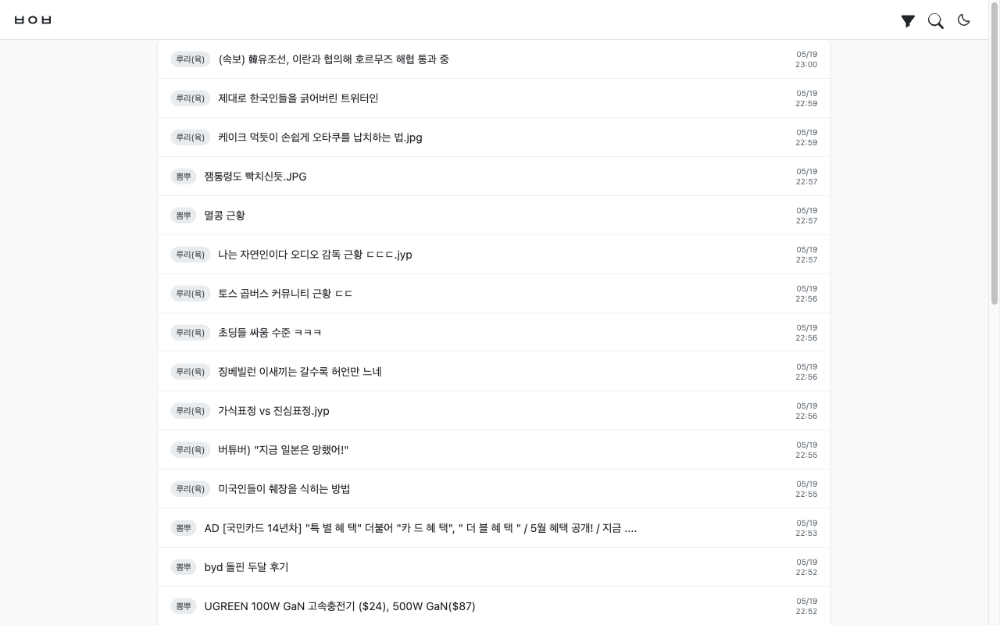
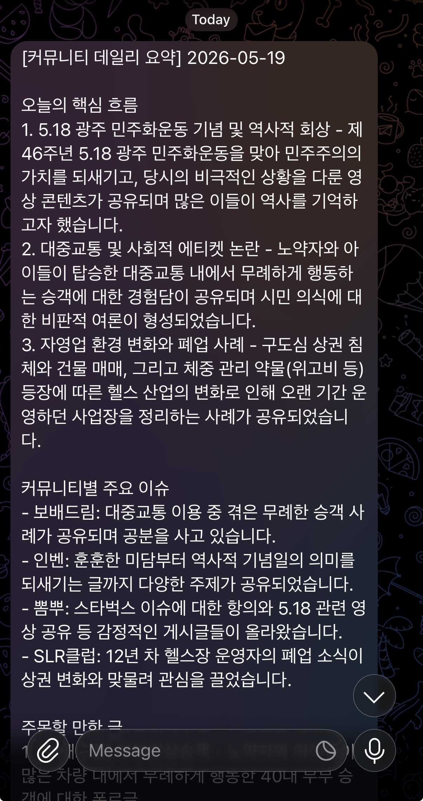

Building a personal content aggregator across a homelab, a Mac Studio, and the cloud
Janghan Park · Intuit
A personal aggregator that watches the web for me — and tells me what mattered.
Pull posts from multiple online communities on a schedule.
Keep them queryable — by topic, by community, by date.
Daily digest of what mattered, sent to my phone.
Slice the plan into agent-shaped tasks — each chunk is either an operation or a piece of code, never both. One session per machine, one task per agent. Keeps purpose unambiguous and dodges content rot.
Goal v1: "works enough that I could demo it from a United flight." It mostly didn't — so every refinement after was driven by a real failure, not speculation.
The more specific the spec, the closer the first output. Ping-ponging with Claude to refine works, but burns time and tokens. Draft the CLAUDE.md ahead in ChatGPT or Gemini, then hand it over.
When multiple agents work in parallel, make sure their work areas don't overlap. Two agents editing the same file or the same cluster object = merge conflicts or silent drift.
Lunch break. Coffee. Phone in hand.

Every community lives somewhere different. No single place to glance at.
Hunting through threads to find the few that actually mattered.
"If I just had everything in one place, I could decide what's worth my attention."
Once data is collected, new uses appear.
Local LLM summarizes overnight.
What topics are heating up across communities?
Three locations, one VPN, no rented servers.
Kubernetes cluster. Argo CD already syncing from GitHub. The workhorse.
Local LLM host. Good for summarization without sending data out.
Tiny, always-on, public IP. Perfect for health checks & reverse-proxy hops.
Home network (MacBook · Homelab · Mac Studio) ⟷ VPN ⟷ External (GCP VM)
The VPN is what makes "one agent, many machines" actually work.
CLAUDE.md as the source of truth.
Collect → store → search → summarize → notify.
Homelab + Mac Studio + GCP. K8s. Argo CD. VPN.
Airflow · Postgres · Elasticsearch · Web frontend
Stay on existing infra. No paid SaaS. Keep ops simple.
"Split this plan by machine, so I can run sessions in parallel."
K8s manifests, Airflow (crawler & digest DAGs), Postgres, ES
Local LLM serving — an inference endpoint the DAG can call
Web frontend, health checks, reverse proxy, public touchpoints
One session per machine = clean state, no context bleed.
One master CLAUDE.md → one prompt → three per-machine CLAUDE.md files.
# Personal Community Aggregator
## Infrastructure
- MacBook · Homelab (K8s) · Mac Studio · GCP VM
- Tailscale between all four
## Platforms
- Airflow · Postgres · Elasticsearch
- Local LLM (Mac Studio) · Next.js (GCP)
## Where work runs
- Homelab session — K8s, Airflow, PG, ES
- Mac Studio session — LLM serving
- GCP session — frontend, nginx, certs# Homelab session
## Scope
K8s cluster only — out of scope: LLM, frontend.
## What lives here
Airflow DAGs · Postgres · Elasticsearch · Argo CD
## External endpoints I call
- mac-studio.tailnet:8080 (NSFW + summary)
## Conventions
- Manifests live in `manifests/` repo, NOT app repos
- Never kubectl apply directly — commit to manifests/# Mac Studio session
## Scope
Local LLM serving only.
## Endpoints exposed
- POST /v1/classify → { nsfw: bool }
- POST /v1/summary → { text: string }
## Conventions
- No public exposure — Tailscale only
- Model swap = restart launchd service
- Pre-stage GGUF files in ~/models/Full examples in examples/ — master + 3 per-machine files.
Where Claude Code earned its keep.
What to crawl, what to store, what shape it lands in.
Claude generates SQL, I review, it runs against Postgres.
Periodic clean-up queries, dedupe runs, column-type fixes.
## Data model
Design the Postgres schema for collected posts.
Pick column types and indexes yourself; just make sure
the following fields exist on each post:
- title
- URL
- community (which site it came from)
- global_id (cross-community unique key)
- fetched_at (when we collected it)
- view_count
- upvotes
- downvotes
- summary (filled later by the LLM)
- is_nsfw (filled later by the NSFW classifier)
- …and anything else you think we'll obviously need
Generate the migration SQL and put it under db/migrations/.
Don't change the schema after this without a new migration.App repo build → push image and commit new tag into the manifest repo → Argo CD watches the manifest repo, syncs the cluster.
Not everything fits Git-driven deploys.
Claude Code with SSH access = a real on-call hands-on operator.
Claude Code and Codex, side by side.
Infrastructure & operations.
SSH into machines. Edit manifests. Run kubectl. Patch DAGs in place. Debug pods.
Application code.
Airflow DAG implementations. Frontend app. Pure code repos. PRs into GitHub.
Early on, Codex had to wait — Claude needed to set the infra up first.
Two specialized agents beat one generalist — as long as you keep their lanes from crossing.
A short tour of things that went wrong.
Pods up, but resources too tight. OOMs and throttling.
Logs missing. Failed collections looked like empty days.
Term extraction option wasn't set — relevant docs were invisible.
No parallelism. One failure cascaded into the next day's run.
I gave only the URLs. Claude figured out the list parsing for each community on its own.
Once the DB schema lived in CLAUDE.md, crawler and query code stopped drifting.
After a host reboot it couldn't explain why the box went down — but it spotted that a Postgres data disk failed to mount, edited /etc/fstab, remounted, restarted Postgres, and brought the service back.
Runs the long kubectl incantations directly. Comfortable with the awkward manifest bits too — hostPath mounts, GPU mounts, secret management.
On a failure, it tails the logs, isolates the offending stack frame, and patches the code directly — no hand-holding.
"Just give it the URL" worked far more often than I expected.
Each one was a 30-minute conversation with Claude — not a 3-day project.
From scattered communities to one morning digest.
Same Mac Studio, two pipelines: an NSFW classifier on incoming posts, and a two-pass summarizer for the daily digest.
No catch-up scrolling. No FOMO. Just what mattered.

No more 20-min site hopping at lunch.
I see more communities now than I used to visit manually.
Pre-ranked by community engagement, not algorithmic feed.
I don't dig through whole threads anymore. The Telegram digest surfaces the popular posts, and I only follow the ones that look worth my time.
The collection pipeline is the foundation.
Everything else is a remix.
Open for questions.
Swap the source list for financial communities + news outlets. Same summarization stack. Output: a markets-focused morning brief.
Pull foreign-language stories, translate & summarize, generate narration, stitch into short videos for YouTube.
Questions?